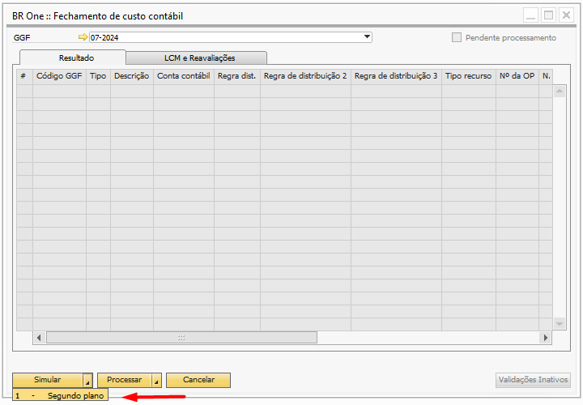
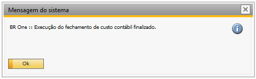
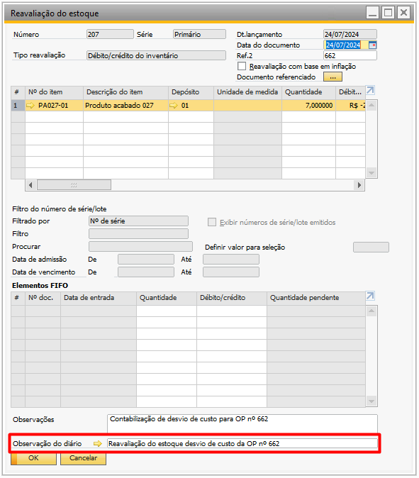
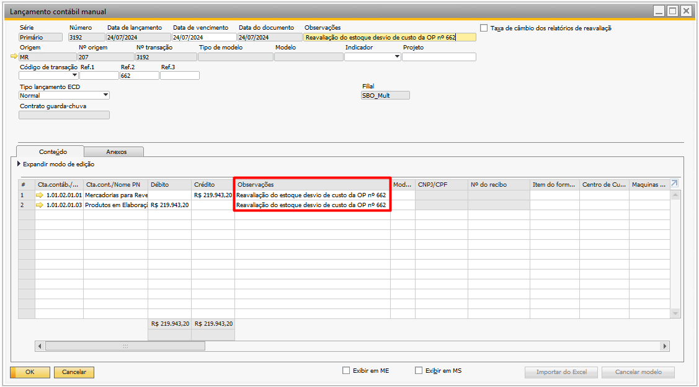
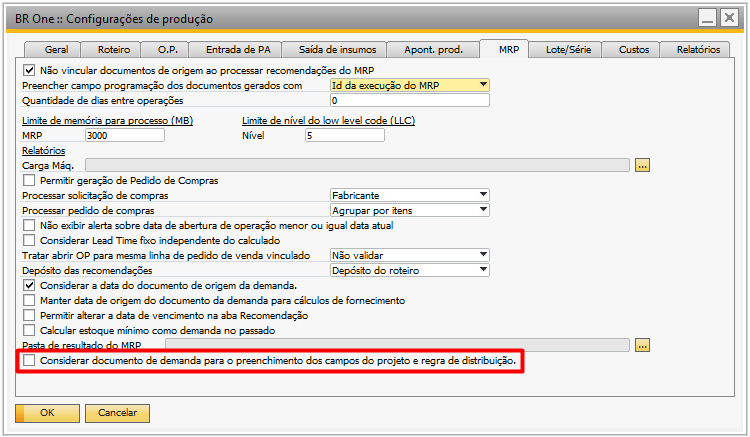
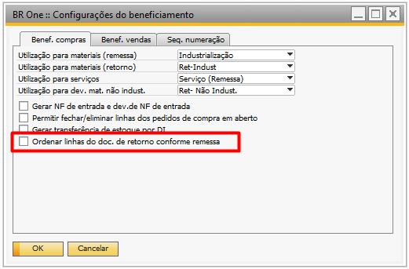

Versão 4.11.327
Melhorias
Fechamento de custo em segundo plano
Com a mais recente atualização do BR One 327, foi implementada uma melhoria no fechamento de custo contábil. Agora, a simulação e o processamento do fechamento de custo contábil podem ser executados em segundo plano, permitindo que o SAP permaneça disponível para outros processos. Assim que a simulação ou o processamento for concluído, um alerta será exibido ao usuário, informando a finalização.
 Descrição observação do diário da reavaliação de estoque da reavaliação de estoque
Com a mais recente atualização do BR One 327, foi implementada uma melhoria na descrição da observação do diário da reavaliação de estoque para desvio de custo da Ordem de Produção. Ao fechar a Ordem de Produção e identificar um desvio de custo, a reavaliação gerada incluirá o número da OP na observação do diário. Isso facilitará o entendimento e proporcionará melhor rastreabilidade.
 Considerar demanda ao recomendar criação de documentos pelo MRP
Com a mais recente atualização do BR One 327, foi implementada uma melhoria no MRP. Foi criado o parâmetro “Considerar documento de demanda para o preenchimento dos campos do projeto e regra de distribuição.”. Esse parâmetro visa preencher as colunas “Projeto” e “Regra de distr.” conforme o documento de demanda.
Exemplo: Quando há uma ordem de produção como demanda para a recomendação dos semi-acabados de sua estrutura, as ordens de produção geradas para os semi-acabados terão os campos “Projeto” e “Regra de distr.” preenchidos conforme a ordem de produção original utilizada como demanda.
Ordenação nas linhas de esboço de retorno conforme documento de remessa
Com a mais recente atualização do BR One 327, foi implementada uma melhoria no processo de beneficiamento de compras. Agora, há um novo parâmetro chamado Ordenar linhas do doc. de retorno conforme remessa em configurações do beneficiamento, aba Benef. Compras. Com esse parâmetro marcado, as linhas do documento de esboço de retorno serão ordenadas conforme o documento de remessa. Caso desmarcado, o processo seguirá conforme o procedimento atual.
Correções
Preço unitário não está sendo exibido na NF de saída
Realizado ajuste para exibição do preço unitário na NF de Saída em processo de transferência entre filiais.
Erro na transferência de estoque para itens de série no processo de beneficiamento de compras
Realizado um ajuste para que, ao adicionar uma entrada de PA para item de série, o mesmo número de série criado na entrada seja validado durante a transferência de estoque DO depósito de terceiro PARA depósito padrão do item.
Erro ao realizar o arredondamento na etapa 2 do assistente de faturamento
Realizado ajuste no arredondamento de valores decimais com 4 ou mais zeros após a virgula na etapa 2 do assistente de faturamento e retorno.
Arredondamento no cálculo do custo unitário do subproduto
Realizado ajuste para evitar o arredondamento do custo unitário do subproduto na entrada do produto acabado.
Item não está sendo exibido após seleção pelo campo CFL
Realizado ajuste para que, ao acionar o campo “Nº do item” com o CFL, a linha da saída de insumos seja preenchida corretamente.